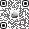

Try it
Pick a pill state above. Click the pill to open it. Click MOA in the menu bartray for the panel.
Guarded on this MacPC
Guarded apps on this MacPC
These drain points while they're open.
Common picks
- Steam
- Discord
- Epic Games
- Battle.net
- Riot Client
- Spotify
- Netflix
All apps
- Figma
- Slack
- Music
Quit Warden?
Your crew gets told you stopped protection.
that's your lot.
Out of points. Earn more to use Steam.
Earn on your phone: walk, work out, focus.
Mac · every screen
Use the sun/moon button for light and dark.
Sign in to Warden
Use the account from your phone.
No account?

Scan with your phone's camera
No Warden account for sam@gmail.com
Set up Warden on your phone first. Then sign in here with the same Google account.
Scan with your phone's camera
Check your email
Type the code we sent to sam@gmail.com
This Mac is linked
Your points sync from your phone.
Browsers
- ChromeLinked
- Safari
- Firefox
A browser without the extension drains the whole time it's in front.
Warden stays in the menu bar.
Mac · drain pill
Black, grows out of the notch. Mint = fine, amber = low, coral = zero.
YouTube · 42 pts left
−1/min while it's open
Stop closes the YouTube tab.
Steam · 9 pts left
Low battery · −1/min · MOA locks it at 0
Stop closes Steam.
Steam · 0 pts
MOA locks it now.
Arc · drains while it's open
No Warden extension in Arc · −1/min
Mac · picker, quit, shield, toast
Apps are per computer. Sites come from the phone.
Windows 11 · every screen
Same pill, top centre of the screen. Warden lives in the tray.
Sign in to Warden
Use the account from your phone.
No account?
Scan with your phone's camera
No Warden account for sam@gmail.com
Set up Warden on your phone first. Then sign in here with the same Google account.
Scan with your phone's camera
Windows · drain pill
Floats at the top centre. Same states as Mac.
YouTube · 42 pts left
−1/min while it's open
Stop closes the YouTube tab.
Steam · 9 pts left
Low battery · −1/min · MOA locks it at 0
Edge · drains while it's open
No Warden extension in Edge · −1/min